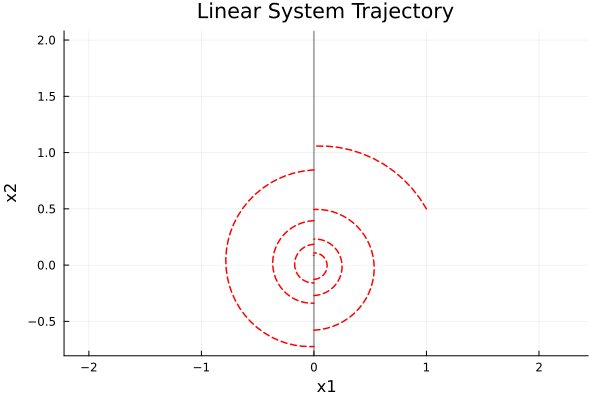

Linear and Affine Systems
A Linear Hybrid System consists of the data $(A, λ, C)$ where
\[ \mathcal{LH} = \begin{cases} \dot x = Ax, & λx \neq 0, \\ x^+ = Cx, & λx = 0. \end{cases}\]
An Affine Hybrid System consists of the data $(A, b, λ, a, C, κ)$ where
\[ \mathcal{AH} = \begin{cases} \dot x = Ax + b, λx + a \neq 0, \\ x^+ = Cx + κ, λx + a = 0. \end{cases}\]
- .$A$ is the state matrix.
- .$b$ is the continuous affine vector ($\dot x = Ax + b$).
- .$λ$ is the guard normal vector.
- .$a$ is the guard affine vector ($λx + a = 0$).
- .$C$ is the reset matrix
- .$κ$ is the reset affine vector $(x^+ = Cx + κ)$.
import HybridDynamics as HD
import Plots as plt
using LaTeXStrings
LA_type = "Linear" # Options: "Linear", "Affine"
LA_A = [-0.5 -10.0; 10.0 -0.5]
LA_λ = [1.0, 0.0]
LA_C = [0.8 0.0; 0.0 0.8]
LA_x0 = [1.0, 0.5]
LA_tspan = (0.0, 2.0)
if LA_type == "Affine"
LA_b = [2.0, 0.0]
LA_a = 0.2
LA_κ = [0.1, -0.2]
LA_sys = HD.AffineSystem(LA_A, LA_b, LA_λ, LA_a, LA_C, LA_κ)
LA_guard = -LA_a
LA_prob = HD.prob(LA_sys, LA_x0, LA_tspan)
LA_sol = HD.solve(LA_prob, HD.RK45())
else
LA_sys = HD.LinearSystem(LA_A, LA_λ, LA_C)
LA_guard = 0.0
LA_prob = HD.prob(LA_sys, LA_x0, LA_tspan)
LA_sol = HD.solve(LA_prob, HD.RK4())
endHybridDynamics.LinearAffineSol{Vector{Float64}, Vector{Vector{Float64}}}([0.0, 0.01, 0.02, 0.03, 0.04, 0.05, 0.060000000000000005, 0.07, 0.08, 0.09 … 1.9315125854943218, 1.9415125854943218, 1.9515125854943218, 1.9615125854943218, 1.9715125854943218, 1.9815125854943219, 1.9915125854943219, 1.9956721046625285, 1.9956721046625285, 2.0], [[1.0, 0.5], [0.9403738760677083, 0.5943562062630209], [0.8719686210525522, 0.6818497883706344], [0.7955533628152046, 0.7616770085676303], [0.7119694095437819, 0.8331185346891423], [0.62212114648776, 0.8955457696773634], [0.5269663946008403, 0.9484262137895874], [0.4275063325393073, 0.991327815678939], [0.3247750868049176, 1.0239222790427598], [0.21982909708619502, 1.0459873022745383] … [0.06677571673862381, 0.089388816238707], [0.057231261209678884, 0.09513183866992012], [0.047211367831333166, 0.09986956724404683], [0.03682063249384947, 0.10356478528028343], [0.026166306412453526, 0.1061910367931626], [0.015357200766369246, 0.10773278310087195], [0.00450258668916257, 0.10818544906586615], [-4.711420106481845e-9, 0.10805414497711377], [-3.7691360851854765e-9, 0.08644331598169103], [-0.0037319276573217174, 0.0861756897915159]], [[-5.5, 9.75], [-5.5, 9.75], [-6.413749000664063, 9.106560657545572], [-7.25448219423262, 8.378761316340205], [-8.014546767083905, 7.5746951238682305], [-8.687170051663314, 6.703134828093248], [-9.266518270017514, 5.773438580038918], [-9.747745335196294, 4.7954508391136095], [-10.127031323059043, 3.7793994175536034], [-10.401610333830057, 2.735789728527797] … [-0.8647540449244476, 0.716094629506812], [-0.9272760207563818, 0.6230627592668846], [-0.9799340173040406, 0.5247466927618288], [-1.022301356356135, 0.42217889469130826], [-1.054058169049759, 0.316423932298353], [-1.0749935211378527, 0.20856754572795397], [-1.0850064313919041, 0.09970561611325647], [-1.0805414474154276, -0.05402711960275795], [-0.8644331579323422, -0.043221695682206365], [-0.8644331579323422, -0.043221695682206365]], [0.11071496366279832, 0.42487449403684074, 0.7390340169012021, 1.0531935397655752, 1.3673530626299484, 1.6815125854943216, 1.9956721046625285], [14, 47, 80, 113, 146, 179, 212])LA_t_list, LA_x_list = HD.split_jumps(LA_sol)
p = plt.plot(title="$(LA_type) System Trajectory", xlabel="x1", ylabel="x2",
aspect_ratio=:equal, grid=true, legend=false)
plt.vline!(p, [LA_guard], label="Guard", color=:black, alpha=0.3, lw=2)
plt.plot!(p, getindex.(LA_x_list, 1), getindex.(LA_x_list, 2),
color=:red, linestyle=:dash, lw=1.5, label="Trajectory")
p